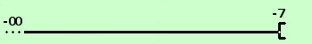

|
sviluppo considerato il seguente intervallo dire se e' aperto o chiuso I = { x ∈ ℜ / x < -7 } E' un intervallo "infinito"; meglio dire illimitato a sinistra, formato da tutti i numeri reali mainori di -7; essendo il punto -7 non compreso in I diremo che e' un intervallo aperto Illimitato a sinistra significa che non posso trovare nessun valore che sia inferiore a tutti i valori dei punti dell'intervallo graficamente lo rappresento come una semiretta di origine -7  |